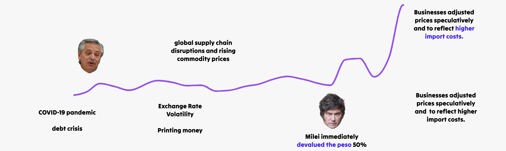
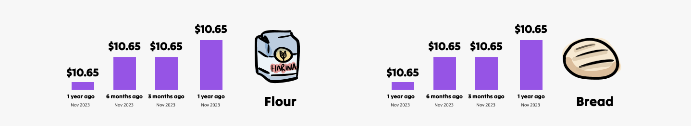

Inflation has gone down but overall yearly inflation is still at 193%
(As of November 2024)
Under the previous government
Inflation had been growing since 2021.
When Milei took office
(As of November 2024)
Under the previous government
When Milei took office
Aenean lacinia bibendum nulla sed consectetur. Cum sociis natoque penatibus et magnis dis parturient montes, nascetur ridiculus mus. Morbi leo risus, porta ac consectetur ac, vestibulum at eros. Maecenas sed diam eget risus varius blandit sit amet non magna. Maecenas sed diam eget risus varius blandit sit amet non magna. Donec id elit non mi porta gravida at eget metus. Cras mattis consectetur purus sit amet fermentum.
Want to see it in action? Play around with inflation rates for the next couple of months and watch how it messes with the price of something simple, like a steak.
Most people don’t notice the rate of inflation itself—they feel the difference at the checkout line, comparing what something cost few weeks or months weeks ago to what it costs now.
